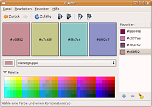
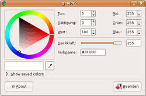
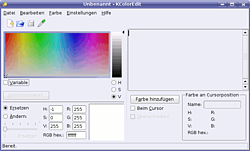

Farbauswahl
Dieser Artikel wurde für die folgenden Ubuntu-Versionen getestet:
Ubuntu 14.04 Trusty Tahr
Zum Verständnis dieses Artikels sind folgende Seiten hilfreich:
Hier werden Programme beschrieben, die den Umgang mit Farben in Bildern, Grafiken oder Webseiten erleichtern. Mit diesen Programmen kann man Farben aus beliebigen Bildern auslesen oder in sich stimmige Farbpaletten erschaffen.
Programme¶
Agave¶

Agave ist ein einfaches Werkzeug, um passende Farbpaletten für Grafiken, Bilder oder Webseiten zu finden. Basierend auf einer Vorgabe erzeugt das Programm sechs unterschiedliche Farbschemata. Die gewünschte Farbe kann dann in die Zwischenablage kopiert werden und im Programm der Wahl bequem gesetzt werden.
Das Programm lässt sich über das folgende Paket installieren [1]
agave (universe)
 mit apturl
mit apturl
Paketliste zum Kopieren:
sudo apt-get install agave
sudo aptitude install agave
und befindet sich danach im Menü unter "Anwendungen -> Grafik -> Agave".
GColor2¶

Gcolor2  ist ein einfaches Programm, um den Farbcode eines Pixels auf dem Bildschirm zu bestimmen. Man wählt die Pipette aus und klickt auf die Stelle des Schirms, an deren Farbwert man interessiert ist.
ist ein einfaches Programm, um den Farbcode eines Pixels auf dem Bildschirm zu bestimmen. Man wählt die Pipette aus und klickt auf die Stelle des Schirms, an deren Farbwert man interessiert ist.
Das Programm kann über das folgende Paket installiert [1] werden
gcolor2 (universe)
mit apturl
Paketliste zum Kopieren:
sudo apt-get install gcolor2
sudo aptitude install gcolor2
und befindet sich danach im Menü unter "Anwendungen -> Grafik -> GColor2".
KColorEdit¶

KColorEdit ist ein weiteres Programm, um Farbpaletten zu bearbeiten und Farben vom Bildschirm abzulesen. Das Programm kann über das folgende Paket installiert [1] werden
kcoloredit (universe)
mit apturl
Paketliste zum Kopieren:
sudo apt-get install kcoloredit
sudo aptitude install kcoloredit
und befindet sich danach im K-Menü unter "Graphik -> Weitere Programme -> KColorEdit Editor für Farbpaletten" bzw. "Graphik -> Weitere Programme -> KColorChooser Farbauswahl".
ColorZilla¶
Bei diesem Programm handelt es sich um eine Erweiterung für den Browser Firefox. Dementsprechend funktioniert das Programm nur mit Webseiten. Weitere Informationen im Artikel ColorZilla.
- Erstellt mit Inyoka
-
 2004 – 2017 ubuntuusers.de • Einige Rechte vorbehalten
2004 – 2017 ubuntuusers.de • Einige Rechte vorbehalten
Lizenz • Kontakt • Datenschutz • Impressum • Serverstatus -
Serverhousing gespendet von